Fr. Michael Sweeney, OP
Dominican priest and co-founder of the Lay Mission Institute and the Catherine of Siena Institute.
Sean Bryan
Co-founder and Executive Director of the Lay Mission Institute.
San FranciscoAges 21 to 40
The next evening is The Work of Human Hands, Tuesday 1 September 2026, 6:30 to 9:30 PM at St Philip the Apostle Church Hall. Registration is open.
RSVP on Luma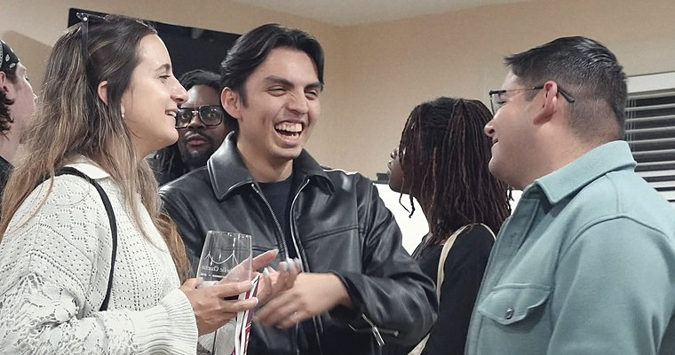
7 July 2026 · St James Parish
Dominican priest and co-founder of the Lay Mission Institute and the Catherine of Siena Institute.
Co-founder and Executive Director of the Lay Mission Institute.
The Archdiocese of San Francisco covered two of these evenings and counted about fifty young adults in the room at each.
Three lecture evenings, every one sold out.
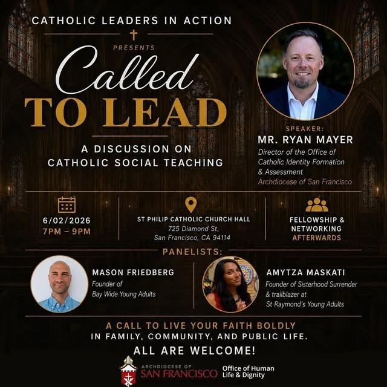
Mr. Ryan Mayer, Archdiocese of San Francisco
Molly C. Sheahan, California Catholic Conference
Sr. Marilú Ibarra, FdCC, St. Anthony Foundation
30 July 2026
The Shroud of Turin, presented by Othonia at St Monica Catholic Church. 22 guests.
30 July 2026 · St Monica
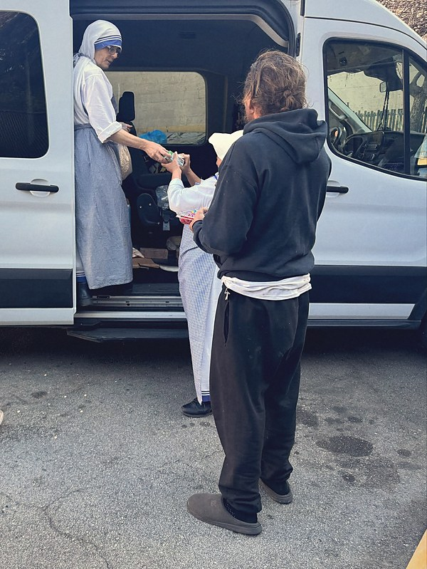
3 August 2026 · San Francisco
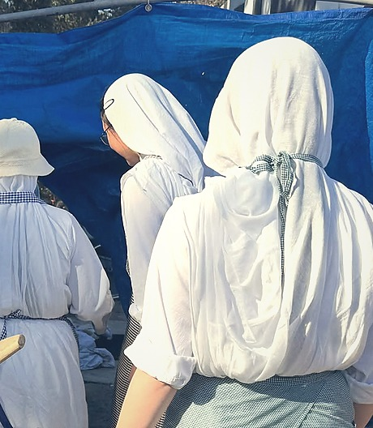
3 August 2026 · San Francisco
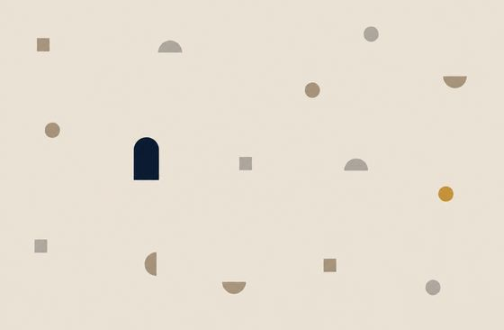
3 August 2026
One outing run in San Francisco, and a second set for 29 August 2026.
The subject changes each month. The order of the night does not.
6:30
Check-in. Wine and small bites.
7:00
The talk, then a panel, then questions.
9:00
The room turns to networking.
9:30
The evening ends.
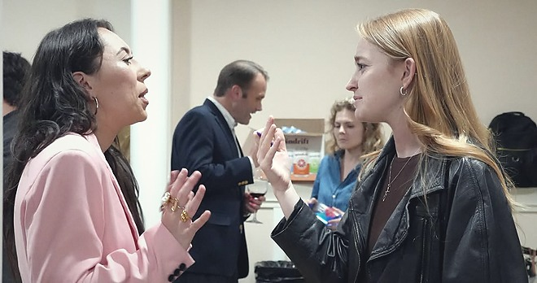
7 July 2026 · St James Parish
CLA chaplain and pastor of the Noe Valley cluster
He is also Catholic Chaplain for the San Francisco Giants.
Every evening but the Spanish one has been held in a parish he pastors.
5 August 2026 · St Paul Church
7 July 2026 · St James Parish
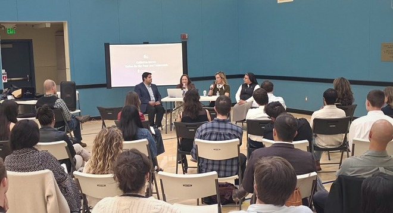
5 August 2026 · St Paul Church
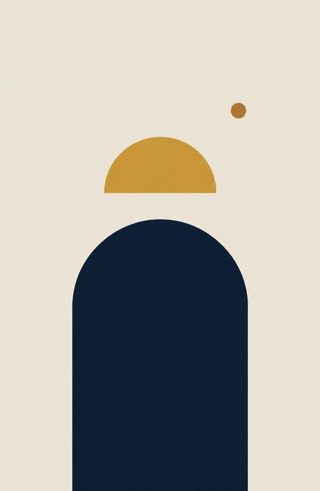
Registration runs through Luma. If the date does not work, leave a number instead.
One message, when the next evening has a date. Nothing else.
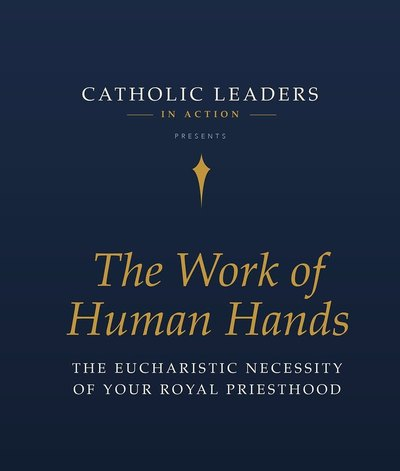
Answers from the event listings.
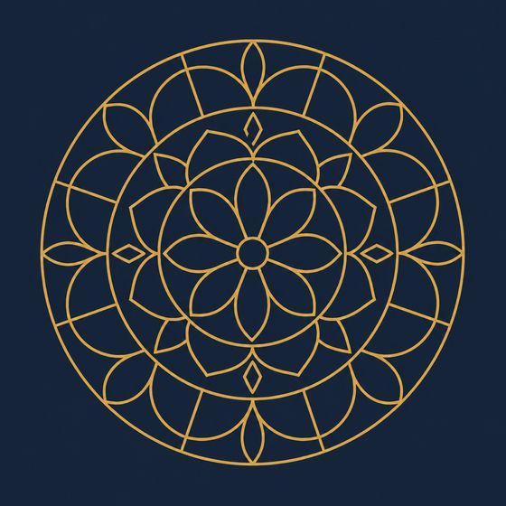
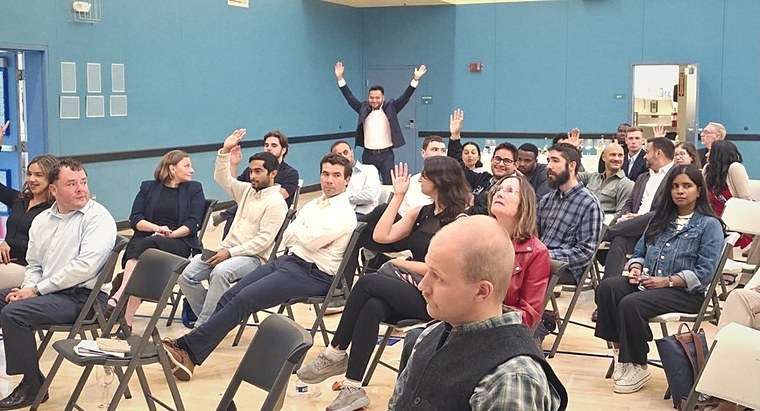
5 August 2026 · St Paul Church
Attendee, 7 July 2026
“I think we’re in a time where a lot of young adults are on fire for their faith, but there’s a disconnect because many don’t know how to unite or move something forward.”
2 June 2026 · St Philip the Apostle
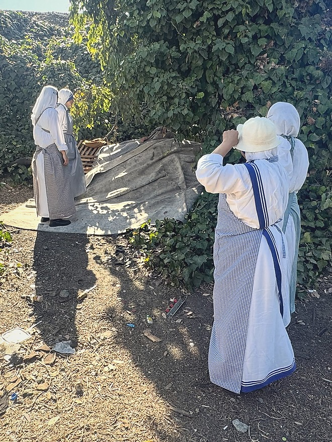
3 August 2026 · San Francisco
7 July 2026 · St James Parish